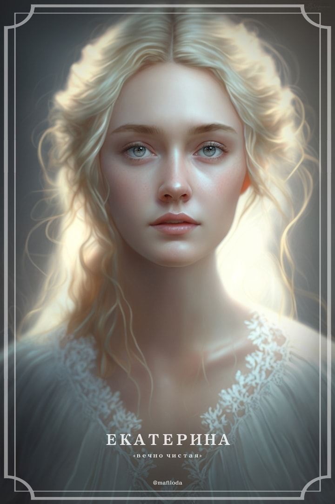
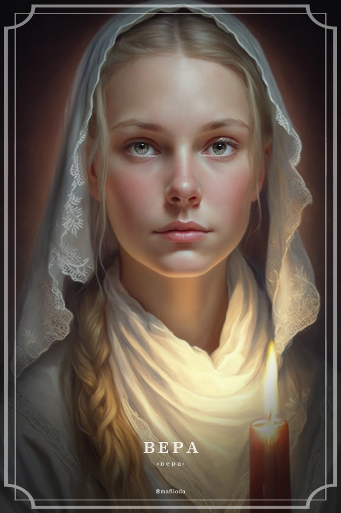
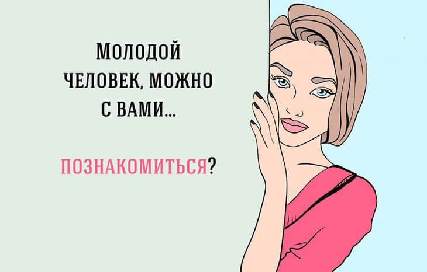

Здесь всегда рады новым гостям!
 Если Вы все еще находитесь в поисках молодого человека или девушки, мужа или жены, то отличным вариантом быстро найти подходящую кандидатуру сегодня являются сайты онлайн-знакомств. Такие ресурсы помогают определиться с кандидатурой не только для флирта или дружбы, но и для серьезных отношений, которые со временем помогают стать настолько близкими друг другу, что весьма вероятно появление семьи. Благодаря Интернету сайты знакомств стали местом встречи людей не только из одного города, но и из совершенно разных стран и континентов, что, согласитесь, очень удобно и значительно быстрее, чем в реальной жизни. В поисках своей избранницы или избранника в Интернете обратите внимание на один из лучших сайтов знакомств для серьезных отношений - Бюро знакомств. Здесь каждого зарегистрировавшегося ждут интересные, реальные знакомства с женщинами, мужчинами, девушками и парнями. Аудитория нашего сервиса крайне широка, поэтому найдутся собеседники для представителей различных возрастов. Проявляйте симпатии, дарите подарки, делайте комплименты всем, чья анкета приходится Вам по душе. Бюро знакомств Вам поможет в этом!

Общение в сети – особый вид коммуникации, при котором люди взаимодействуют через гаджеты и интернет.
Стоит определить, что именно подразумевается под общением через интернет: электронная почта, социальные сети, скайп и видеочаты, чаты, онлайн-игры, комментарии под видео или статьями, форумы – в общем, практически все, что дарует интернет.

К особенностям интернет-общения относится:
- Отсутствие невербальных источников информации (везде, где общение ведется не через камеру).
- Отсрочка во времени (ответ можно дать гораздо позже полученного сообщения).
- Устранение каких-либо барьеров (локальных, временных, языковых).
- Привычное и комфортное место общения, что придает человеку уверенность и спокойствие.
- Высокий риск дезинформирования и ложных представлений, манипуляций, обманов.
- Возможность разговаривать на любые темы и говорить о себе все.
Странно, но факт: людям проще рассказать что-то особо постыдное и мучающее их душу (и тем самым освободить себя) незнакомцу в сети, нежели близкому другу.
Возможность быть самим собой или наоборот побыть в какой-то другой роли, образе.
Отработка письма, если сознательно следить за своей речью. Интернет-общение способно помочь повысить грамотность и улучшить изложение мыслей. А, например, ведение дневника – популярный метод психотерапии.
Ухудшение устной речи. На бумаге (клавиатуре, виртуальном листе) проще излагать свои мысли. А если не следить за письмом, то постепенно в речь войдут сокращения и сленги.
Интересный факт: в интернете люди склонны преувеличивать действительность, приукрашать свою жизнь и свой образ, а также показывать себя с лучшей стороны. Общаясь в интернете, мы узнаем только 3 % информации о человеке.
Общение по скайпу приближено к реальному взаимодействию, но все-таки уступает ему. Можно запланировать время соединения, подготовиться к нему и при желании воплотить какой-то образ.
® 2023, г.Гомель, проспект Октября 48а, к.36-1